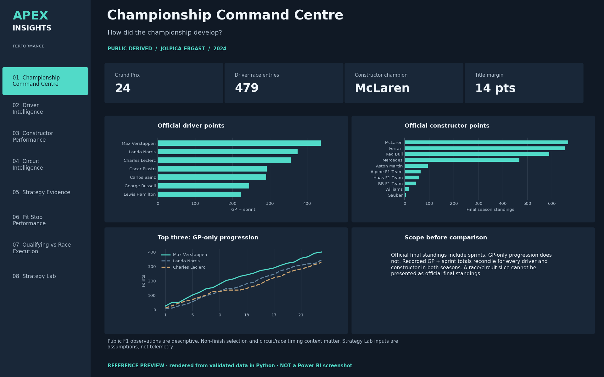
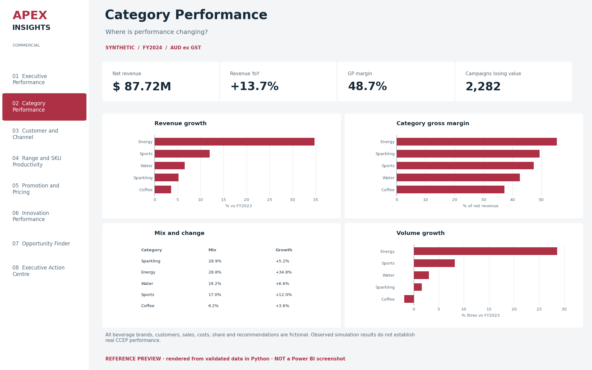

03 / Commercial & performance intelligence
Apex Insights
One analytical discipline across two domains: explain performance, identify a driver, propose a test and define the measure of success.

01 / The problem
Start with the decision.
Category growth can hide weakness in the existing range, while higher promotional unit sales can obscure lower profit. In motorsport, results can also mislead if sprint points, classification and non-finishes are not treated consistently.
The decision to support
Which drivers explain the headline result, and what should be tested before calling an apparent opportunity a business benefit?
02 / The approach
Connect the business and the model.
- Separate sources and analytical populations. Fictional commercial transactions are kept distinct from public Jolpica F1 results. Separate facts preserve sales, targets, market, distribution and promotion grains; source and rights records make provenance explicit.
- Author inspectable BI sources. Two native Power BI projects contain 78 DAX measure definitions and 16 analytical report pages, plus utility pages. Power Query functions, model sources, navigation and visual bindings are structurally validated.
- Reconcile the commercial drivers. An additive volume, price/mix, interaction and launch bridge reconciles revenue movement. SQL extracts and Python outputs provide reproducible evidence behind the reporting model.
- Test what the pipeline can establish. Documented validation includes 334 data checks, Microsoft schema checks across 409 native project/report files and 332 field-reference checks. Source validation cannot establish native visual, refresh or interaction behaviour.
03 / A worked example
What the evidence reveals.
Existing Coffee SKU revenue change · Synthetic FY2024
−20.0%Total Coffee revenue grows 3.6% in the synthetic commercial model, while existing Coffee SKU revenue declines 20.0%. Launch sales mask weakness in the core range. Separately, 2,282 of 2,321 campaign-year records lift units but reduce net incremental profit against a generated counterfactual.
Investigate existing-range demand and distribution before scaling the launch. Test shallower discounts against a holdout and measure contribution after execution costs. These are hypotheses from synthetic analysis, rather than real CCEP recommendations or achieved results.




04 / Inspect the work
Evidence beyond the screen.
Offline replay compares all 38 supplied processed CSV files byte-for-byte. Adversarial tests cover duplicate keys, bad arithmetic, incorrect provenance and invalid dates. Windows Power BI refresh, rendering, interaction and performance acceptance remain pending.
Explore the source and delivery artefacts below.
05 / Project boundaries
Be clear about what is demonstrated.
Commercial businesses, transactions and outcomes are synthetic; no employment or affiliation with CCEP or Formula 1 is implied. F1 data is attributed to Jolpica-F1 under CC BY-NC-SA 4.0; third-party data is not relicensed as MIT. Reference layouts are Python renders. No deployed dashboard, native runtime certification, causal promotion lift or realised corporate savings is claimed.
Development used AI assistance. The repository documents the implementation and developer checks; simulated discovery and acceptance exercises do not replace real stakeholder participation.